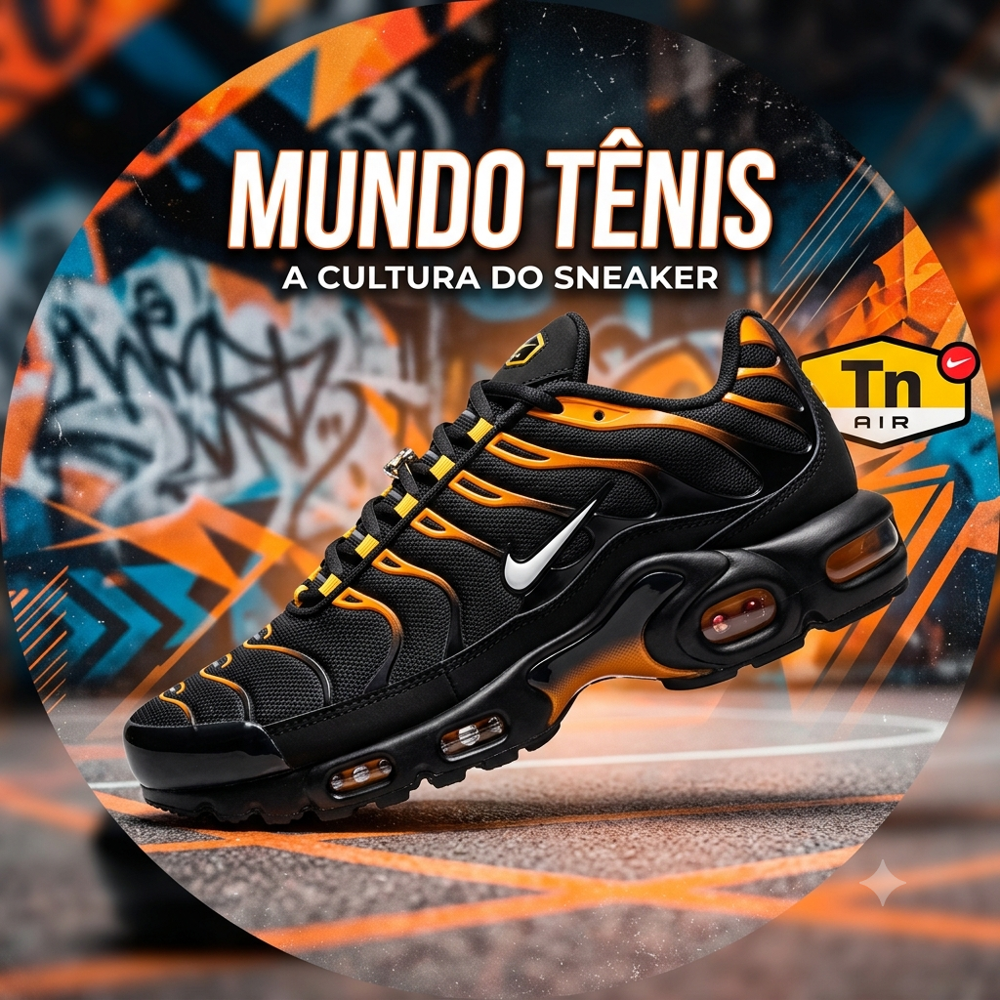

Meu primeiro post
Por: Cleiton da Batata Doce
Boas-vindas ao meu novo blog! Aqui vou compartilhar meus conhecimentos sobre o mundo dos Tênis.
Vou compartilhar conhecimentos tênis e calçados

Por: Cleiton da Batata Doce
Boas-vindas ao meu novo blog! Aqui vou compartilhar meus conhecimentos sobre o mundo dos Tênis.
Como dizia Kyan: "Um tênis de mil, vale muito mais que mil pode valer uma vida." isso siginifica que valorizamos o que vestimos e oque compramos
NIKE: A nike comecou no mundo dos tênis em 1964, porém, so foi adiquirir o nome nike em 1971, o primeiro lançado foi o nike Cortez em 1966, uns dos tenis que mais marcaram foi o Air max 95 neon, que foi o tênis ultilizado pela seleção brasileira em 2002
ADIDAS: Nasceu oficialmente em 18 de agosto de 1949, mas sua história começou nos anos 1920 na Alemanha, fruto de uma parceria e de uma grande rivalidade entre dois irmãos, o primeiro tenis lançado foi o Adidas Samba, lançado originalmente em 1950, um dos tênis que foi mais marcante foi o adidas Superstar
PUMA: A Puma SE nasceu em 1948 na cidade de Herzogenaurach, na Alemanha, após uma forte briga entre os irmãos Rudolf e Adolf Dassler, O tênis mais famoso e icônico da Puma é o Puma Suede Classic, lançado originalmente em 1968.
ASICS: Nasceu em 1º de setembro de 1949, em Kobe, no Japão, quando o ex-militar Kihachiro Onitsuka fundou a Onitsuka Co. com o objetivo de reerguere inspirar a juventude japonesa pós-Segunda Guerra Mundial por meio do esporte, um dos principais tênis dessa marca e o asisc NYC-GEL
QIX A Qix é uma das marcas de calçados e streetwear mais tradicionais do skate brasileiro, fundada no início dos anos 90 no Rio Grande do Sul, um dos principais tênis dessa marca e o Qix chorão lado b
HOCKS: A Hocks nasceu em 2002, em Porto Alegre, fundada por skatistas incluindo o sócio-fundador Cristiano Senra, o principal tênis da marce o o Hocks puff
ÖUS: A Öus é uma marca brasileira de calçados e streetwear voltada para o skate e a cultura urbana, fundada em 25 de agosto de 2008 em Curitiba (PR) pelos irmãos e skatistas Rafael e Bruno Narciso, o tênis mais famoso e o öus Imigrante
VANS: A Vans foi fundada em 16 de março de 1966 pelos irmãos Paul Van Doren e Jim Van Doren, junto com os sócios Gordon Lee e Serge Delia, na cidade de Anaheim, na Califórnia, essa marca e uma das mais usadas, principalmentre o Old Skool
Todas essas marcas tem uma pegada mais de Skatista ou esportiva que foram adaptadas para o estilo streetwear, ou sportlife.